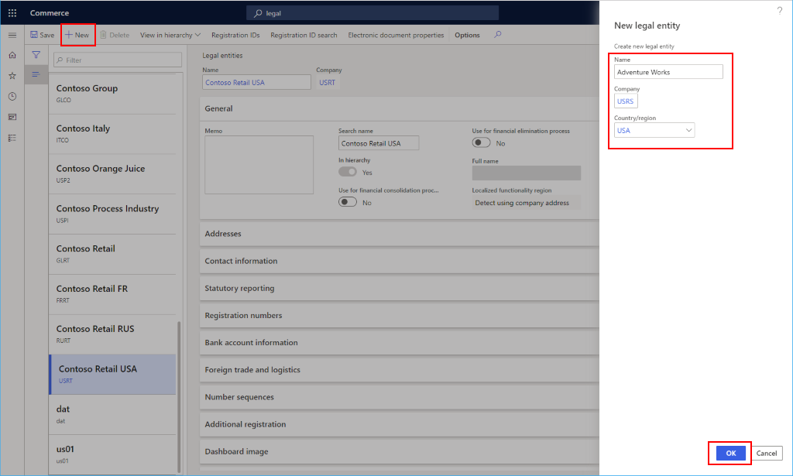
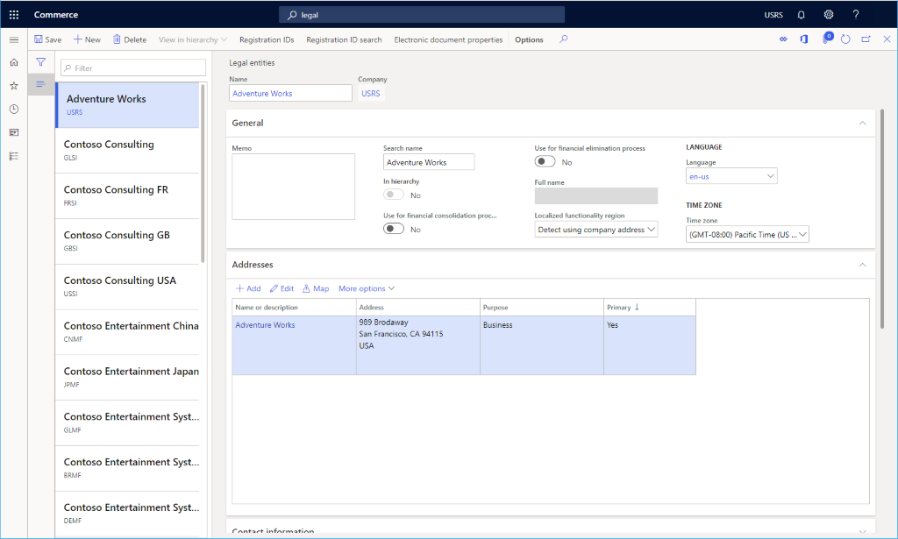

Erstellen juristischer Personen
Important
Dynamics 365 Retail ist jetzt Dynamics 365 Commerce und bietet umfassende Handelsfunktionen für alle Kanäle – von E-Commerce über Shops bis hin zu Callcentern. Weitere Informationen zu diesen Änderungen finden Sie unter Microsoft Dynamics 365 Commerce.
In diesem Thema wird beschrieben, wie Sie juristische Personen in Microsoft Dynamics 365 Commerce erstellen, die erstellt und konfiguriert werden müssen, bevor Kanäle erstellt werden.
Übersicht
Eine juristische Person ist eine Organisation mit einer registrierten oder eingetragenen Rechtsform. Juristische Personen können Verträge abschließen und sind verpflichtet, Finanzaufstellungen zum Erstellen eines Berichts über ihre Vermögens-, Finanz- und Ertragslage vorzubereiten.
Ein Unternehmen ist eine Art von juristischer Person. Derzeit sind Unternehmen die einzige Art von juristischer Person, die Sie erstellen können, und jeder juristischen Person ist eine Unternehmenskennung zugeordnet. Diese Zuordnung ist notwendig, da einige Funktionsbereiche im Programm eine Unternehmenskennung (oder DataAreaId) in den Datenmodellen verwenden. In diesen Funktionsbereichen werden Unternehmen als Grenze für die Datensicherheit verwendet. Benutzer können nur auf Daten für das Unternehmen zugreifen, bei dem sie derzeit angemeldet sind.
Beim Erstellen eines Kanals müssen Sie angeben, zu welcher juristischen Person dieser Kanal gehört.
Eine neue juristische Person erstellen
Gehen Sie folgendermaßen vor, um eine neue juristische Person in Dynamics 365 Commerce zu erstellen.
Gehen Sie im Navigationsbereich zu Module > Hauptsitz einrichten > Juristische Personen.
Wählen Sie im Aktivitätsbereich Neu aus. Das Fenster Neue juristische Person wird rechts angezeigt.
Geben Sie im Feld Name einen Wert ein.
Geben Sie im Feld Unternehmen einen Wert ein.
Wählen Sie im Feld Land/Region einen Wert aus, oder geben Sie einen Wert ein.
Wählen Sie OK.

Stellen Sie im Abschnitt Allgemein die folgenden allgemeinen Informationen zur juristischen Person bereit:
- Geben Sie einen Suchbegriff ein, falls erforderlich. Ein Suchbegriff ist ein alternativer Name, der verwendet werden kann, um nach dieser juristischen Person zu suchen.
- Wählen Sie aus, ob diese juristische Person als Konsolidierungsunternehmen verwendet werden soll.
- Wählen Sie aus, ob diese juristische Person als Unternehmen mit Löschungseinträgen verwendet werden soll.
- Wählen Sie die Standardsprache für die Entität aus.
- Wählen Sie die Zeitzone für die Entität aus.
Wählen Sie im Abschnitt Adressen die Option Bearbeiten, um die Adressinformationen wie die Straße und Hausnummer, die Postleitzahl und den Ort einzugeben.
Geben Sie im Abschnitt Kontaktinformationen Informationen zu den Kommunikationsmethoden ein, wie beispielsweise E-Mail-Adressen, URLs und Telefonnummern.
Geben Sie im Abschnitt Offenlegungspflicht die Registrierungsnummern ein, die für die Offenlegungspflicht verwendet werden.
Geben Sie im Abschnitt Registrierungsnummern alle Informationen ein, die für die juristische Person erforderlich sind.
Geben Sie im Abschnitt Bankkontinformationen die Bankkonten und Bankleitzahlen für die juristische Person ein.
Geben Sie im Abschnitt Außenhandel und Logistik die Versandinformationen für die juristische Person ein.
Im Abschnitt Nummernkreise können Sie die Nummernkreise anzeigen, die der juristischen Person zugeordnet sind. Dies ist zunächst leer.
Im Abschnitt Dashboardbild zeigen Sie das Logo und/oder Dashboardbild an, das der juristischen Person zugeordnet ist, oder ändern Sie es.
Geben Sie im Abschnitt Steuerregistrierung die Registrierungsnummern ein, die für die Meldung bei Steuerbehörden verwendet werden.
Geben Sie im Abschnitt Steuererklärung (US 1099) die Informationen zur Steuererklärung (US 1099) für die juristische Person ein.
Geben Sie im Abschnitt Steuerinformation die Steuerinformation für die juristische Person ein.
Wählen Sie Speichern.
Das folgende Bild zeigt die Details eines Beispiels für eine juristische Person.

Zusätzliche Ressourcen
Organisationen und Organisationshierarchien – Übersicht